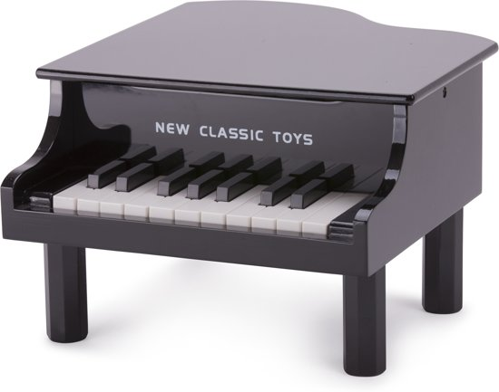
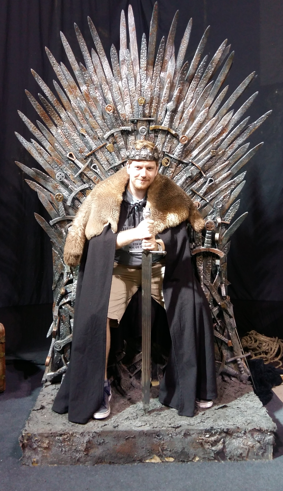

Wie ben ik?
Hallo!, ik ben Jeroen de Reus, geboren te 25/12 `87 in Ede.
Welkom op mijn pagina!
Mijn achtergrond
Geboren in Ede, getogen in Vaassen. Beide op de Veluwe. Middelbare school VWO gedaan in Apeldoorn. Na mijn middelbare school sociologie gestudeerd aan de RijksUniversiteit Groningen.
Hobby's
In mijn vrije tijd speel ik graag piano (volg nog les ook). Ik kijk graag voetbal en formule 1. Sport staat op een laag pitje maar ik hoop in de toekomst weer te mountainbiken. Daarnaast lees ik graag (fantasyliefhebber), game ik nog wat en hou ik ervan om te koken.
Wat kan ik?
So far in de IT: HTML, CSS, JavaScript, jQuery, GIT & Command.
